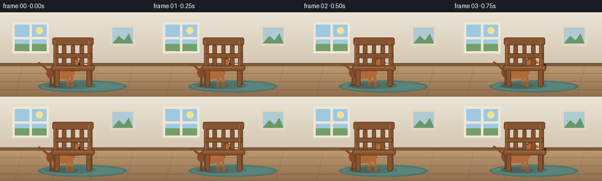
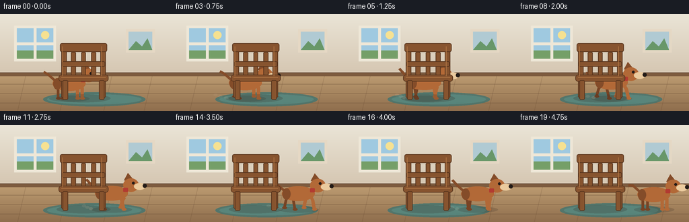

CODING AGENTS AS PIXEL WORLD MODELS
traex/Seed-2.1-Pro-0915 · dynamic_spatial_relationship_0005
点击播放 · 原生 RGB 像素
逐轮保存的候选
回放视频、检查图与代码变化。
每份候选均可单独播放。实际图片检查记录在下方工具轨迹中。
候选 01播放与检查图
点击播放 · 原生 RGB 像素


展开代码变化
--- 上一保存版本 +++ 本次保存版本 @@ -0,0 +1,217 @@ +import math +from pathlib import Path + +import numpy as np +from PIL import Image, ImageDraw + +import artifact_io + + +WIDTH, HEIGHT = 256, 144 +FRAME_COUNT, FPS = 20, 4.0 +SCALE = 3 +GROUND_Y = 126 +CHAIR_X = 124 + + +def point(value): + return int(round(value * SCALE)) + + +def bounds(values): + return tuple(point(value) for value in values) + + +def points(values): + return [(point(x), point(y)) for x, y in values] + + +def ellipse(draw, box, fill, outline=None, width=1): + draw.ellipse( + bounds(box), + fill=fill, + outline=outline, + width=max(1, point(width)), + ) + + +def rectangle(draw, box, fill, outline=None, width=1): + draw.rectangle( + bounds(box), + fill=fill, + outline=outline, + width=max(1, point(width)), + ) + + +def rounded(draw, box, radius, fill, outline=None, width=1): + draw.rounded_rectangle( + bounds(box), + radius=point(radius), + fill=fill, + outline=outline, + width=max(1, point(width)), + ) + + +def line(draw, vertices, fill, width=1): + draw.line(points(vertices), fill=fill, width=point(width), joint="curve") + + +def polygon(draw, vertices, fill, outline=None): + draw.polygon(points(vertices), fill=fill, outline=outline) + + +def make_background(): + wall_top = np.array([234, 228, 214], dtype=np.float32) + wall_bottom = np.array([213, 198, 177], dtype=np.float32) + floor_top = np.array([188, 155, 113], dtype=np.float32) + floor_bottom = np.array([143, 110, 77], dtype=np.float32) + + image = np.zeros((HEIGHT, WIDTH, 3), dtype=np.uint8) + horizon = 91 + for y in range(horizon): + mix = y / max(1, horizon - 1) + image[y, :] = wall_top * (1 - mix) + wall_bottom * mix + for y in range(horizon, HEIGHT): + mix = (y - horizon) / (HEIGHT - horizon - 1) + image[y, :] = floor_top * (1 - mix) + floor_bottom * mix + + canvas = Image.fromarray(image).resize( + (WIDTH * SCALE, HEIGHT * SCALE), Image.Resampling.NEAREST + ) + draw = ImageDraw.Draw(canvas, "RGBA") + + rectangle(draw, (0, 87, WIDTH, 92), (126, 92, 63, 255)) + line(draw, [(0, 87), (WIDTH, 87)], (95, 68, 47, 255), 1) + + # Window and a small framed picture give the room quiet depth. + rectangle(draw, (21, 17, 83, 70), (238, 231, 215, 255)) + rectangle(draw, (25, 21, 79, 66), (159, 201, 224, 255)) + ellipse(draw, (61, 25, 73, 37), (246, 225, 145, 255)) + rectangle(draw, (25, 54, 79, 66), (117, 159, 104, 255)) + rectangle(draw, (50, 21, 54, 66), (238, 231, 215, 255)) + rectangle(draw, (25, 42, 79, 46), (238, 231, 215, 255)) + + rectangle(draw, (187, 22, 230, 57), (229, 216, 196, 255)) + rectangle(draw, (191, 26, 226, 53), (176, 202, 211, 255)) + polygon(draw, [(191, 53), (202, 40), (211, 48), (219, 36), (226, 53)], + (104, 151, 105, 255)) + + for y in (104, 118, 132): + line(draw, [(0, y), (WIDTH, y)], (96, 68, 45, 85), 1) + for x in (38, 101, 166, 226): + line(draw, [(x, 92), (x - 12, HEIGHT)], (96, 68, 45, 55), 1) + + ellipse(draw, (64, 116, 216, 137), (67, 116, 111, 210)) + ellipse(draw, (70, 119, 210, 134), (91, 139, 130, 180)) + return canvas + + +def draw_dog(canvas, cx, phase, run): + draw = ImageDraw.Draw(canvas, "RGBA") + main_fur = (178, 105, 55, 255) + dark_fur = (132, 76, 41, 255) + cream = (235, 203, 158, 255) + black = (35, 27, 23, 255) + + ellipse(draw, (cx - 31, GROUND_Y - 5, cx + 29, GROUND_Y + 4), (45, 32, 24, 45)) + + bob = -2.0 * run + body_y = GROUND_Y - 23 + bob + head_x = cx + 27 + head_y = body_y - 12 + + tail_tip_y = body_y - 17 + math.sin(phase) * 4 + line(draw, [(cx - 23, body_y - 5), (cx - 32, body_y - 13), + (cx - 39, tail_tip_y)], dark_fur, 4) + + def draw_leg(dx, offset, far): + swing = run * 7 * math.sin(phase + offset) + lift = max(0.0, run * 6 * math.cos(phase + offset)) + hip = (cx + dx, body_y + 6) + knee = (cx + dx + swing * 0.45, GROUND_Y - 13 + bob) + paw = (cx + dx + swing, GROUND_Y - 1 - lift) + color = (119, 67, 36, 255) if far else main_fur + line(draw, [hip, knee, paw], color, 4 if far else 5) + ellipse(draw, (paw[0] - 3, paw[1] - 2, paw[0] + 4, paw[1] + 2), color) + + draw_leg(-18, math.pi, True) + draw_leg(-11, 0.0, True) + + ellipse(draw, (cx - 26, body_y - 11, cx + 23, body_y + 11), main_fur) + ellipse(draw, (cx - 25, body_y - 8, cx - 13, body_y + 9), dark_fur) + + polygon(draw, [ + (head_x - 10, head_y - 7), + (head_x - 4, head_y - 18), + (head_x + 5, head_y - 7), + ], dark_fur) + ellipse(draw, (head_x - 11, head_y - 10, head_x + 12, head_y + 10), main_fur) + ellipse(draw, (head_x + 5, head_y - 3, head_x + 22, head_y + 7), cream) + ellipse(draw, (head_x + 18, head_y - 2, head_x + 24, head_y + 4), black) + ellipse(draw, (head_x + 2, head_y - 5, head_x + 6, head_y - 1), black) + rounded(draw, (head_x - 11, head_y + 4, head_x - 4, head_y + 10), 1, + (178, 59, 49, 255)) + + draw_leg(11, math.pi, False) + draw_leg(18, 0.0, False) + + # Small ground puffs peak while the dog is moving fastest. + for index in range(3): + puff_x = cx - 30 - index * 7 + math.sin(phase + index) * 2 + puff_y = GROUND_Y - 2 - index * 2 + alpha = int(65 * run * (1 - index * 0.18)) + ellipse(draw, (puff_x - 3, puff_y - 2, puff_x + 3, puff_y + 2), + (214, 198, 171, alpha)) + + +def draw_chair(canvas): + draw = ImageDraw.Draw(canvas, "RGBA") + wood = (135, 84, 47, 255) + wood_dark = (88, 53, 30, 255) + wood_light = (174, 117, 68, 255) + left, right = CHAIR_X - 29, CHAIR_X + 29 + + ellipse(draw, (CHAIR_X - 40, 119, CHAIR_X + 40, 131), (45, 32, 24, 50)) + + rounded(draw, (left - 4, 44, left + 4, 124), 2, wood, wood_dark, 1) + rounded(draw, (right - 4, 44, right + 4, 124), 2, wood, wood_dark, 1) + rounded(draw, (left - 6, 43, right + 6, 56), 3, wood, wood_dark, 1) + + for slat_x in (CHAIR_X - 15, CHAIR_X, CHAIR_X + 15): + rounded(draw, (slat_x - 3.5, 56, slat_x + 3.5, 91), 2, + wood, wood_dark, 1) + rounded(draw, (left - 3, 70, right + 3, 78), 2, wood, wood_dark, 1) + rounded(draw, (left - 8, 90, right + 8, 100), 4, wood, wood_dark, 1) + + rounded(draw, (left - 2, 98, left + 6, 127), 2, wood, wood_dark, 1) + rounded(draw, (right - 6, 98, right + 2, 127), 2, wood, wood_dark, 1) + + line(draw, [(left - 2, 48), (left - 2, 92)], wood_light, 1) + line(draw, [(right - 2, 48), (right - 2, 92)], wood_light, 1) + line(draw, [(left - 4, 94), (right + 4, 94)], wood_light, 1) + + +def main(): + background = make_background() + frames = [] + for index in range(FRAME_COUNT): + t = index / (FRAME_COUNT - 1) + eased = 0.5 - 0.5 * math.cos(math.pi * t) + dog_x = 104 + 101 * eased + run = math.sin(math.pi * t) + phase = 2 * math.pi * index / 6.0 + + frame = background.copy() + draw_dog(frame, dog_x, phase, run) + draw_chair(frame) + frame = frame.resize((WIDTH, HEIGHT), Image.Resampling.LANCZOS) + frames.append(np.asarray(frame, dtype=np.uint8)) + + case_dir = Path(__file__).resolve().parent + artifact_io.save(np.stack(frames), case_dir) + + +if __name__ == "__main__": + main()
可观测工具轨迹
实际执行的命令与返回图片。
命令 1exit 0
/bin/bash -lc 'cat prompt.txt GENERATION_RULES.md task_spec.json'
命令 2exit 0
/bin/bash -lc 'rg --files'
命令 3exit 0
/bin/bash -lc 'cat artifact_io.py'
命令 4exit 0
/bin/bash -lc 'python generate.py && ls -la pixels.npz inspection.png transition_check.png index.html frames | head -30'
视觉工具实际返回图片 1

保存候选 1 份；完成命令 4 次；可验证图片返回 1 张。原始 API 响应与完整日志保留在本地。